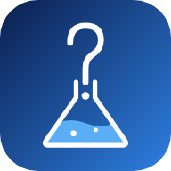

FindChem 앱 받기
물질명이나 CAS 번호로 「유해화학물질의 규정수량에 관한 규정」의 규정수량을 찾는 Android 앱입니다.
Android 앱(APK) 받기설치 방법
- 위 버튼으로
findchem.apk를 받습니다. - 받은 파일을 엽니다. “출처를 알 수 없는 앱” 설치를 허용할지 물으면 이번에 파일을 연 앱(브라우저·파일 앱)에 허용합니다.
- Play 프로텍트 경고가 뜨면 “자세히” → “무시하고 설치”를 누릅니다. 스토어에 올리지 않은 앱이라 뜨는 경고입니다.
이 앱은
- 인터넷을 쓰지 않습니다. 고시 표 데이터가 앱 안에 들어 있고, 검색은 휴대폰 안에서만 합니다.
- 설치할 때나 쓰는 동안 권한(위치·연락처·저장소 등)을 요청하지 않습니다.
업데이트
- 자동 업데이트는 없습니다. 새 버전은 이 페이지에서 다시 받아 그대로 덮어 설치하면 됩니다.
- 덮어 설치해도 자주보는 Chem 목록과 올려 둔 원천자료는 남습니다. 앱을 지우면 함께 지워집니다.
- 지금 쓰는 버전은 앱의 ⋮ → 설정 맨 아래 “앱 버전”에서 보고, 위 “최신 버전 번호”와 비교하세요.